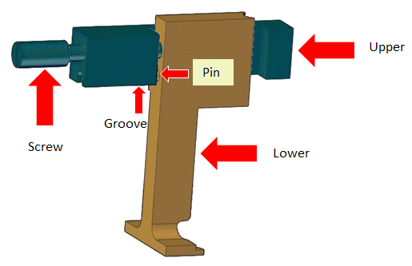
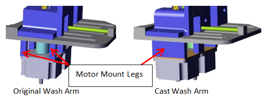
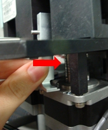
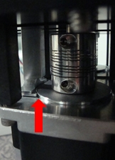
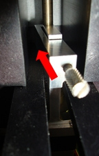

This procedure describes how to replace the wash arm couplers.
Required Materials:
0.030-inch feeler gauge
SAE hex-wrench set
Motor alignment tool, DxI wash assy
Figure 58: Motor alignment tool

Note: Incorrect alignment of the motor mount and lead screw can cause premature failure of the coupler.
Pre-requisites:
Before performing this procedure, remove the analytical module to provide sufficient vertical clearance to remove the coupler. Removing the analytical module also provides access to the screws on the coupler and motor that are too difficult to access from inside the instrument.
Perform this procedure when the motor-to-lead screw coupler on the aspirate or dispense plate is damaged or cracked. These event logs can indicate a broken coupler:
Software V4.4
Software V4.3 and below
Aspirate probe plate motion failure
Aspirate probe plate motor slipped
Dispense probe plate motion failure
Dispense probe plate motor slipped
Possible motion or sensor failure
Subsystem: WashWheel.AspirateArm.motor or DispenseArm.motor
The MCC has failed to input capture
Subsystem: WashWheel.AspirateArm.motor or DispenseArm.motor
If the instrument has the new cast wash arm design, you do not need the motor alignment tool. The cast wash arm:
contains a built-in alignment plate. If the coupler in these wash arms fails, it is a premature failure. File a type 2 CF.
is identified by solid side-motor mount legs on the aspirate and dispense motors.
is in DxI 800 instruments 602603 and higher, DxI 600 instruments 900557 and higher, and instruments with a cast wash arm built after September 2011.

Warning: Potentially, the magnets in the analytical module are strong enough to interfere with medical devices, ferromagnetic implants, or loose metal objects in close proximity to the magnetic field. Consider the following:
Persons with medical devices or metal implants should not hold the wash arm side of the analytical module close to their body.
Consult your physician or your medical device manual for more information.
The magnetic field near the analytical module was measured:
near the wash arm: 26.4 mT.
one foot from the wash arm: 0.12 mT.
Remove the wash arm coupler from the analytical module.
For unobstructed access to the coupler and screws, place the analytical module on a table with the aspirate and dispense plate motors extending over the table edge.
Remove the two or four coupler set-screws.
The set-screws can be 7/64-inch screws or 3/32-inch screws. New couplers have only two set-screws. Original couplers have four set-screws.
Remove the two or four 9/64-inch screws on the motor mount, and then remove the coupler and motor.
New couplers have two screws. Original couplers have four screws.
Install the wash arm coupler into the analytical module.
Slide the replacement coupler onto the motor shaft, but do not secure it.
The orientation of the coupler is not critical.
While sliding the motor and coupler onto the lead screw shaft, position the motor with the power cable pointing under the analytical module.
Attach the motor to the stand-offs by securing the four screws, and then loosen the screws one turn.
Place the lower part of the alignment tool through the slotted black plate above the motors.

Check that the rounded portion of the tool rests against the raised circular edge of the motor.

Loosen the screw on the upper part of the alignment tool, without allowing the end of the screw to protrude past the tool.
Place the upper part of the alignment tool with the groove from the top resting on the pin from the bottom.

Tighten the screw on the alignment tool.
Note: The alignment tool aligns the motor (with slotted holes) to the stationary lead screw to prevent coupler failure.
Push the motor toward the alignment tool, and then carefully, tighten the motor screws.
Before proceeding, verify that the alignment tool is contacting the raised portion of the motor.
Note: If the alignment tool is not contacting the raised portion of the motor, loosen the screws one turn and then tighten them starting with the screws at opposite corners. The alignment tool must contact the raised portion of the motor before proceeding.
Remove the alignment tool.
Place a 0.030-inch feeler gauge between the coupler and the motor and securely tighten the screws on the coupler.
Note: Tighten the screws securely or the wash arms plates will not move. New couplers have two screws. Original couplers have four screws.
Manually move the aspirate and dispense plates fully up and down. Check for uniform resistance and full movement.